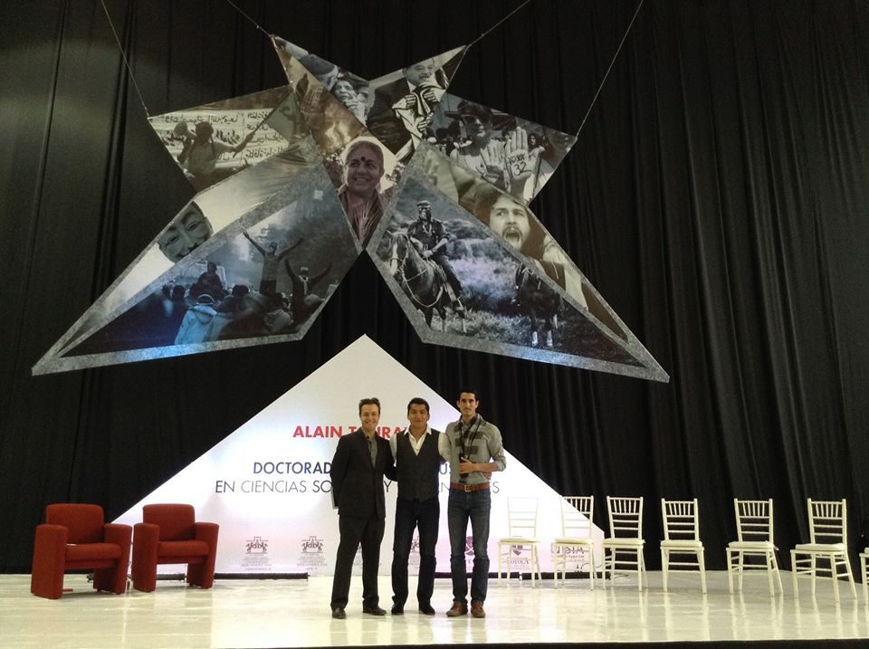

El arte de crear comunidades globales

Por Miguel Nieva / @mikenieva
El acercamiento a nuestras primeras "comunidades"
La familia, nuestra comunidad principal
Los mejores amigos, el círculo más cercano y activo

Nuestros compañeros profesionales en el trabajo

Principales comunidades
Tú eres una marca
Tú eres una marca
Tú eres una marca
Tú eres una marca
Convertirnos en líderes de comunidad
Convertirnos en líderes de comunidad

Convertirnos en líderes de comunidad

Convertirnos en líderes de comunidad
Sin la ejecución, la idea no vale nada
El Internet es la herramienta, no la base
Mide todo lo que puedas
Finalmente, escala con procesos
Muchísimas gracias
miguelnieva.github.io/mejorandolaconferencia